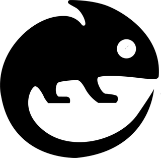
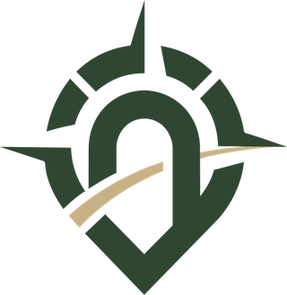

Honours

Permanent collection
Michael Fischbach
Mechanical engineering · Cal Poly San Luis Obispo
In 2019 I ordered a concrete fingerboard ramp from Germany for $30. My mom looked at it and said I could make it myself, so I did, with old molding material from the garage. That garage ramp turned into Chameleon Ramps, which I ran for six years and which shipped 627 orders to 15 countries. Every product went through four to six prototype generations before the mold was good enough to sell from, and I still work that way.
Now I lead Cal Poly's 12-person WERC team designing a 1 kW wireless charger for NASA's Artemis lunar rover, and I intern at All Domain Integration supporting Space Force and Air Force mission systems engineers. The work I like best is still the garage kind: a drawing on a screen turning into a part I can hold.
3.79
GPA · Honors Program
1 kW
lunar rover charger, team lead
40+
products taken to market
The collection
Projects
What I designed, built and measured, two featured first. Each one says what it was for and what came out of it.

Featured
Lunar Rover Wireless Charger
A 1 kW capacitive charger for a NASA Artemis rover at the lunar South Pole: the rover parks itself at a charging wall and power crosses a 100 mm gap with no contact. I lead the twelve-person team.

Featured
CNC-Milled Aluminium Putter
A putter head machined from 6061 on a 3-axis Haas in two operations, proved out on twelve printed prototypes first. One of eight capstone finalists from over forty.


Chameleon Ramps
A cast-concrete product company I ran from 2019 to 2026: forty designs taken from CAD through printed prototypes and mould-making to a shipped product, sold in 15 countries.

Wave Energy Converter
A rack-and-pinion generator turning wave oscillation into electrical power, every component machined in-house on a Bridgeport mill. I led the team of five.

SMC Trading Bot
A Python system that reads options alerts written in prose and places the orders itself, against a funded brokerage account, with no human in the loop. Parameters were chosen on their worst case across two disjoint validation windows rather than their best.

Campus Native
A production marketplace for student-led campus tours: sixteen data models and payment handling, with double-booking prevented by a database constraint rather than application logic.
Off the wall
Built for fun
About
Profile


I am a mechanical engineering student at Cal Poly San Luis Obispo, in the Honors Program, with a 3.79 GPA and a place on the President's Honors List for my first year.
The work I like best is where a drawing becomes a part: design it, make it, test it, find out where the model was wrong, change it. I learn the most when something fails the first time. On the wave energy converter the first gear ratio was wrong, the motor could not turn against it, and only the second one ran. That applies to a part on a mill and to a system in production, which is why both appear here.
I grew up in an Air Force family and moved nine times across seven states and territories, so a new team or a new city is normal. Away from engineering: Eagle Scout, 500 miles of backpacking, rowing with the Channel Islands club, and watercolour.
Experience
2026 – now
WERC Design Contest Team Lead
Cal Poly · NASA Artemis wireless capacitive charger
Lead a twelve-person undergraduate and graduate team designing a 1 kW capacitive charger for a lunar rover. Set the schedule, integrate power, coupler, controls and structures, and develop plate-based alignment sensing for docking.
2025 – now
Mechanical Engineering Intern
All Domain Integration · aerospace engineering, remote
Support mission systems engineers on Space Force and Air Force efforts as part of a SETA contractor team. Use locally hosted language models to analyse satellite sensor data.
2019 – 2026
Founder and CEO
Chameleon Ramps · chameleonramps.com
Designed 40+ cast-concrete products through four to six prototype generations each; $39,600 in revenue across 627 orders, shipped to 15 countries.
2023 – 2024
Business Partner
Ashersells LLC
Built Python automation for logistics and order processing.
Education
2025 – 2028
B.S. Mechanical Engineering, Honors Program
Cal Poly San Luis Obispo · GPA 3.79 · expected May 2028
Completed: subtractive manufacturing I and II, materials joining, materials engineering with lab, calculus I to III, physics I to III. In progress: statics, design using solid modelling (SolidWorks), applied programming. Next: dynamics, circuits and electronics, linear analysis.
Built mechanisms with tolerance stack-up and GD&T: a piston, a Geneva wheel and a CNC-machined screwdriver.
2022 – 2025
Institute of Engineering
Oaks Christian School
Engineering pathway: six multi-month applied design projects, among them the putter, the wave energy converter and the Nicaragua water system.
Skills
- CAD / CAE
- Fusion 360 (6+ years, 55+ designs), SolidWorks, AutoCAD, Autodesk CFD
- Manufacturing
- 3-axis Haas CNC, Bridgeport mill, lathe, FDM and SLA printing, composite and concrete casting
- Methods
- GD&T (ASME Y14.5), DFM, tolerance stack-up, cost modelling, iterative prototyping
- Software
- Python, Git, MATLAB, Linux, HTML/CSS; agentic coding with Claude Code and Codex
- Certification
- Haas CNC Certification Program, Basic Mill Operator: online coursework completed, 2026
Contact
Get in touch
Looking for a mechanical engineering internship for summer 2027. Open to relocation.